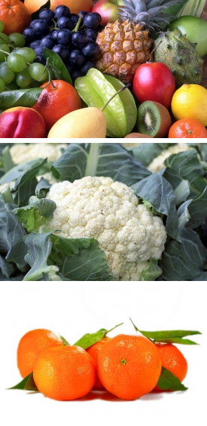

Currently ItemManager does not have its own functionality for manipulating of images and uses the PHPThumb library for these purposes.
Here I'll show you how to use PHPThumb to create your images at any size on the fly. For that we'll add a new function getResized() to the functions.php file within your theme folder.
First of all, the library must be included in the functions.php in order to use PHPThumb functionality:
Now the getResized() function can be created. Note that when sizing an image, a new copy is created and cached, so that it doesn't have to be re-created every time.
In this example I use file-upload field, If you want to use image-upload instead, you have to change the fied attributes according to the field specifications. More infos about image-upload field attributes see under Following image-field attributes are accessible: https://github.com/bigin/ImExtraFields/blob/master/README.md
You can call getResized() in your template file with following parameters:
Create a new image at width $x, and proportional in height to the original:
Create a new image at width 200px, and proportional in height to the original:
Create a new image at height 200, and proportional in width to the original.
You can repeat function call as often as you like, in order to display all your image field values:
or:
Output might look like this:

For more information on usage PHPThumb see also: https://github.com/masterexploder/PHPThumb/wiki/Basic-Usage